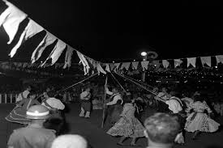
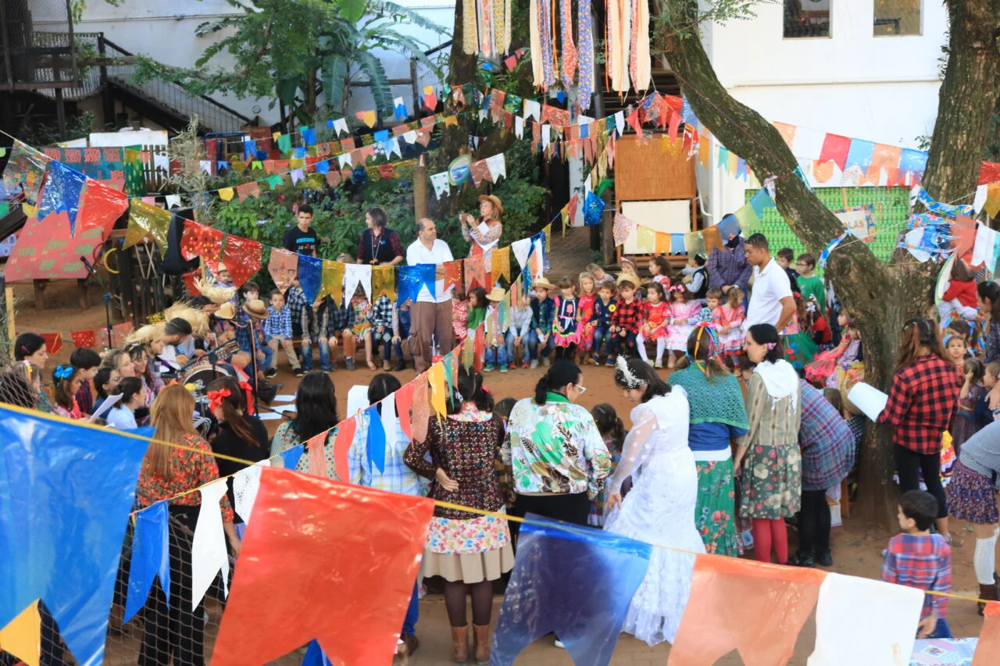

Festa Junina
Surgiu na Europa como festa de agradecimento pelas colheitas e foi trazida ao Brasil pelos portugueses no período colonial. No Brasil, elementos católicos se misturaram com tradições indígenas e africanas, dando origem a uma festa com identidade própria. Era tradicional nas zonas rurais como forma de celebrar o fim das colheitas, com agradecimentos e muita comida.

A festa junina é uma expressão autêntica da cultura popular brasileira. Ela preserva costumes do interior do país — como o uso da roupa caipira, o sotaque marcado nas encenações e as danças coletivas — e os transporta para ambientes urbanos. Isso gera um sentimento de pertencimento e identidade, tanto para quem vive no campo quanto para os que moram na cidade, pois todos se reconhecem em partes desse universo.
